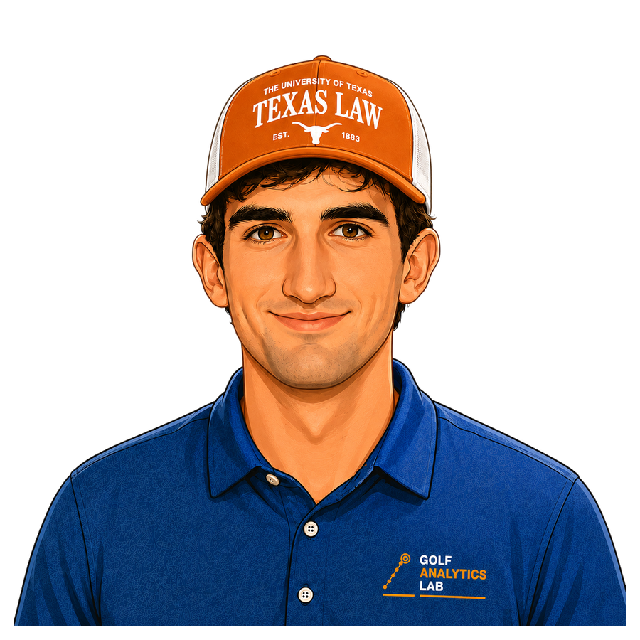

Elliot
Research Editor
Elliot supports source review, fact-checking, and the development of clear, well-supported equipment content. He is a law student at the University of Texas and brings a disciplined approach to research, analysis, and written communication.
Areas of focusResearch, source verification, editorial review, and fact-checking